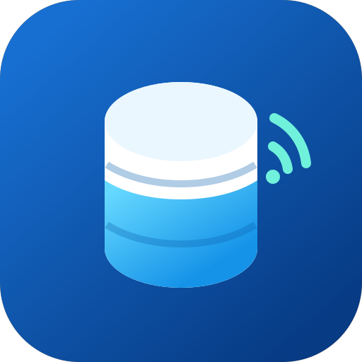

Owner Handover, Operation and Administration Guide
This document explains ownership, normal operation, administration, installation boundaries, maintenance and future responsibilities.
This guide gives the system owner the information needed to operate and administer the Smart Water Tank system responsibly. It covers the web dashboard, Android application, ESP32 controller, Supabase backend, account management, automatic pump thresholds, security, maintenance and support handover.
Smart Water Tank monitors the water level in a storage tank and automatically controls filling. An ultrasonic sensor reports the distance to the water surface. The ESP32 converts this distance to tank level, applies safety checks and controls the relay command.
The system consists of:
| Item | Details |
|---|---|
| Production dashboard | https://nujoka1.github.io/borehole-control/ |
| GitHub repository | https://github.com/nujoka1/borehole-control |
| Owner account | ahmadkgaladima@gmail.com |
| Device code | SMART_WATER_TANK_01 |
| Android file | Smart-Water-Tank-v1.0.apk |
| Arduino handoff folder | Smart_Water_Tank_Arduino |
Passwords, device tokens, Supabase secret keys and signing credentials are intentionally not written in this document. They must be transferred and stored privately.
The controller uses two thresholds to prevent rapid switching:
The standard starting values are 60% for the lower limit and 95% for the upper limit. The two limits must remain at least five percentage points apart. The correct values should be selected based on the real tank, water demand and pump installation.
Local ESP32 operation does not depend on continuous internet access. If Wi-Fi or Supabase is temporarily unavailable, live monitoring stops, but the controller can continue its local automatic logic. Sensor failure, stale measurements and maximum runtime conditions request a safe pump-OFF state.
Shows tank percentage, calculated water height, pump status, lower and upper limits, latest update time and overall system status.
Shows recent tank readings and trends. A history value is evidence of data received by the backend; it is not a substitute for checking the physical tank when readings appear abnormal.
Shows sensor faults, device events and configuration delivery results. Repeated faults should be investigated rather than repeatedly cleared or ignored.
Allows threshold and tank-depth configuration, appearance selection, user creation, guidance, application information and sign-out.
The supplied APK is debug-signed for direct installation. Publishing through Google Play requires an owner-controlled release signing key, a release build and store compliance preparation.
Only a tank owner can create a user. In the application, open Settings → Create user, then enter the full name, email address, temporary password and access level.
| Role | Intended access |
|---|---|
| Owner | System administration and ownership. The existing owner role is managed deliberately and is not offered in the routine user-creation form. |
| Operator | Monitoring plus permitted automatic configuration such as tank thresholds. |
| Viewer | Monitoring access without configuration authority. |
After creation, Supabase attempts to send a secure one-time sign-in link. The email is optional: the new user can ignore it and sign in using the temporary password. If mail delivery is unavailable, the account is still created and the application tells the owner to share the temporary password privately.
The ESP32 first tries its configured Wi-Fi network. If it cannot connect, it can open a temporary setup network named Smart-Water-Tank-xxxx. Connect a phone to that network and use the captive portal to select the installation Wi-Fi.
If the device appears offline:
The owner or technician should copy the complete Smart_Water_Tank_Arduino folder. The folder and its main file Smart_Water_Tank_Arduino.ino must keep matching names.
Arduino IDE requirements:
| Function | ESP32 GPIO |
|---|---|
| Ultrasonic ECHO | 14 |
| Ultrasonic TRIG | 27 |
| Buzzer | 26 |
| Status LED | 25 |
| Relay command | 33 |
| Frequency | Recommended activity |
|---|---|
| Weekly | Review offline periods, unusual levels, sensor faults and pump activity. |
| Monthly | Inspect sensor mounting, enclosure, moisture, corrosion, terminals and cables. |
| After power or pump faults | Review alerts, verify automatic operation and inspect electrical protection. |
| Periodically | Review user access, update dependencies, rotate credentials where necessary and verify backups. |
| Symptom | What to check |
|---|---|
| Cannot sign in | Email spelling, temporary password, password reset, internet connection and Supabase Auth status. |
| Create User section missing | Confirm the signed-in account is the owner of SMART_WATER_TANK_01, then sign out and sign in again. |
| User created but email not received | Spam folder, Supabase SMTP configuration, email rate limits and Auth redirect URL. The temporary password remains usable. |
| Device offline | ESP32 power, Wi-Fi, router internet, signal strength and device credential. |
| Water level unavailable | Sensor power, ECHO voltage, wiring, alignment, condensation and obstructions. |
| Pump remains stopped | Tank level, sensor health, runtime lockout, relay circuit and electrical protection. |
| Incorrect level | Measured usable depth, mounting offset, sensor position and water-surface turbulence. |
| Area | Status |
|---|---|
| React dashboard type-check, lint, tests and production build | PASS |
| GitHub Pages dashboard deployment | PASS |
| Supabase authenticated admin user function | ACTIVE |
| Android APK build and signature verification | PASS — debug-signed |
| PlatformIO ESP32 build | PASS |
| Automatic-control unit tests | PASS — 6 tests |
| Physical ESP32, sensor, relay and pump tests | NOT VERIFIED |
| Actual email inbox delivery | NOT VERIFIED — requires production SMTP and a real recipient test |
| Google Play release | NOT PREPARED — requires owner-controlled release signing |
The developer has supplied the application source, ESP32 firmware source, Arduino IDE handoff folder, Android installation package, dashboard deployment, backend implementation and supporting documentation described above. The owner accepts responsibility for account custody, authorized-user management, cloud subscription continuity, credential protection, qualified electrical installation, physical commissioning, routine maintenance and decisions about future commercial deployment.
This system assists monitoring and automatic filling. It does not replace a physical isolator, properly rated electrical protection, regular tank inspection or qualified maintenance.
| System owner signature: ________________________________ | Date: ________________________________ |
| Developer signature: ________________________________ | Date: ________________________________ |